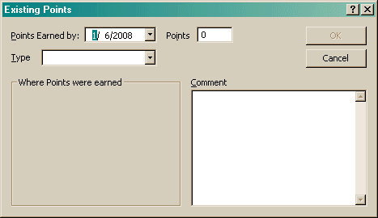

The Existing Points dialog allows you to create or edit a points that you have already earned in a specific venue. This allows you to create a dog in Agility Record Book that has been competing for a long time and not have to enter every run they have done. (Though some people have commented that doing so was a fun jaunt down memory lane...)

The Points Earned by field is the date the points you are entered where earned by, not necessarily on. Points is the under of points you earned.
The Type of points will affect which fields are active:
Type |
Double Q | MACH | OtherPoints | Run | SuperQ |
| Other Points | N/A | N/A | List of configured Other Points | N/A | N/A |
| Venue | List of configured venues | List of configured venues | List of configured venues | List of configured venues | List of configured venues |
| Division | List of configured divisions for the selected venue | List of configured divisions for the selected venue | List of configured divisions for the selected venue | List of configured divisions for the selected venue | List of configured divisions for the selected venue |
| Level | List of configured levels for the selected division | List of configured levels for the selected division | List of configured levels for the selected division | List of configured levels for the selected division | List of configured levels for the selected division |
| Event | N/A | N/A | List of configured events for the selected level | List of configured events for the selected level | List of configured events for the selected level |
Note, this dialog does not do any integrity checking, so it is possible you could create an entry with no meaning.